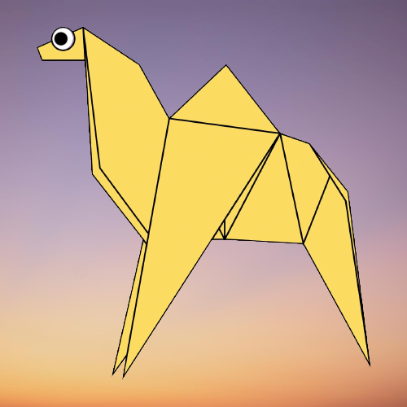
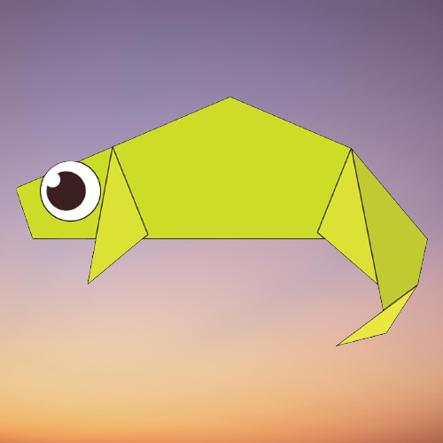
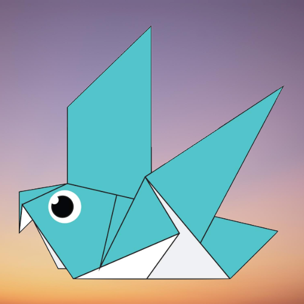
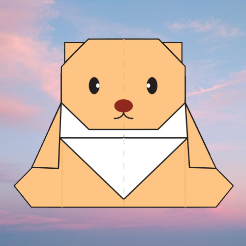
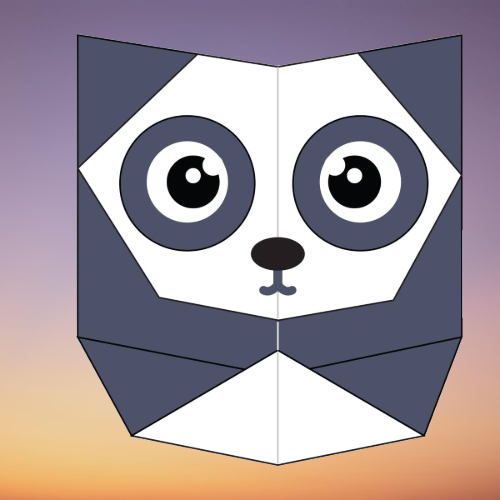
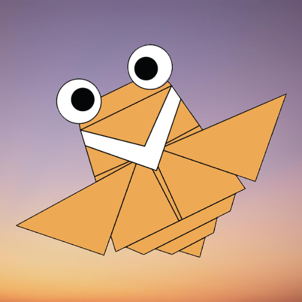

Origami Designs
Click on the pictures to see the steps for making them.

Camels are called the ship of the desert and have furry ears. They can move easily across sand because of its specially designed feet. When they find water, they will drink as much as possible.

Chameleons are reptiles that are part of the iguana suborder. Chaging skin color is an important part of communication among chameleons. Most chameleons have a prehensile tail that they use to wrap around tree branches.

Pigeons are incredibly complex and intelligent birds. They are renowned for their outstanding navigational abilities and are highly sociable animals.

Teddy

Pandas are extremely cute mammals that go from pink to black and white color. They are good at climbing trees and swimming. They can eat 12-38 kilos of bamboo per day.

Cicada are members of the superfamily Cicadoidea and are as small as a paper clip. They can live upto 17 years and come in many different colors.